데이터 분석을 위한 LLM과 머신러닝 모델
잘 맞히는 모델과 원인을 아는 일의 구분
LLM과 분석 모델의 차이
모델 · 앱 · 실행 위치 구분
작업별 등급 선택
명세 4칸으로 요청
코드 실행 근거 요구
회귀 · 분류 · 군집을 기준선과 비교
상관 · 예측 · 인과 구분
교란 후보 3개 나열
AI의 인과 문장 검출
| 시간 | 블록 | 내용 |
|---|---|---|
| 10:00–10:10 | 도입 질문 | 아이스크림과 익사 사고 |
| 10:10–11:10 | Part I 모델과 사용법 | LLM 등급 · 사용 절차 · 회귀 · 분류 · 군집 · 시계열 |
| 11:10–11:20 | 휴식 | |
| 11:20–11:50 | Part II 판단 | 상관의 네 가지 설명 · 교란 · 문장 등급 · AI 함정 #7 |
| 11:50–12:40 | Part III 실습 | 모델 비교 · 층화 · 기준선 대조 |
| 12:40–13:00 | 정리 | 모델 선택표 · 과제 브리핑 |
말로 일하는 모델과 숫자로 규칙을 찾는 모델
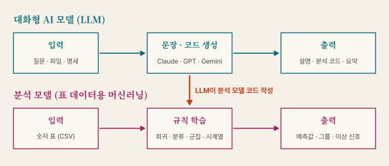
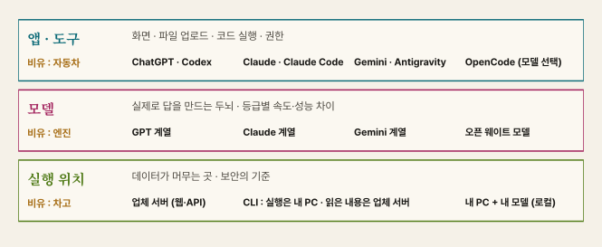
| 계열 | 최상위 | 상위·균형 | 빠른·경량 |
|---|---|---|---|
| Anthropic | Claude Fable 5.1 | Claude Opus 5.5 · Sonnet 5.5 | Claude Haiku 5.5 |
| OpenAI | GPT-6 Astra | GPT-6 Sol · GPT-6.1 Terra | GPT-6 Luna |
| Gemini 4 Argon | Gemini 3.8 Flash | Gemini 3.5 Flash-Lite | |
| 오픈 웨이트 | gpt-oss · Gemma 4 · Qwen · Llama 4 · DeepSeek V4 (모델별 라이선스 확인) | ||
| 국내 | K-EXAONE · EXAONE 4.5 (LG) · Solar (Upstage) · HyperCLOVA X SEED (네이버) | ||
| 작업 | 등급 | 이유 |
|---|---|---|
| 열 이름 정리 · 문장 요약 · 후기 대량 분류 | 빠른·경량 | 단순 반복 · 속도와 비용 우선 |
| 분석 코드 작성 · 차트 · 표 정리 | 상위·균형 | 대부분의 실습 기본값 |
| 설계 검토 · 복잡한 오류 추적 · 교란 후보 검토 | 최상위 | 긴 추론 · 오류 비용 큼 |
| 민감 자료를 외부로 보낼 수 없는 경우 | 로컬 (오픈 웨이트) | 내 PC 안에서 처리 · 성능·설치 부담 |
배달 수단 : 근거리는 오토바이 · 일상 짐은 승용차 · 큰 이사는 트럭 · 집 밖으로 못 나가는 짐은 집 안에서 처리
| 방식 | 예 | 파일·코드 | 잘 맞는 일 |
|---|---|---|---|
| 웹 앱 | ChatGPT · Claude · Gemini | 업로드 파일 · 앱 내 실행 기능 | 첫 탐색 · 차트 초안 |
| CLI 에이전트 | OpenCode · Antigravity CLI · Claude Code | 내 폴더 직접 수정 · 명령 실행 | 반복 분석 · 파일 산출 · 수업 실습 |
| 로컬 모델 | Ollama + 오픈 웨이트 | 데이터 외부 전송 없음 (클라우드 모델 제외) | 민감 자료 · 인터넷 제한 환경 |
# CLI 에이전트 : 분석 폴더에서 실행
cd my-analysis
opencode
# 로컬 모델 : 이름은 설치 화면 기준
ollama run <모델명>
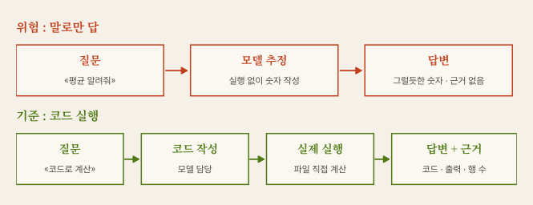
암산과 계산기 : 말로 쓴 평균 = 암산 결과 · 실행 결과 = 계산기 영수증 → 영수증 없는 숫자는 미검증
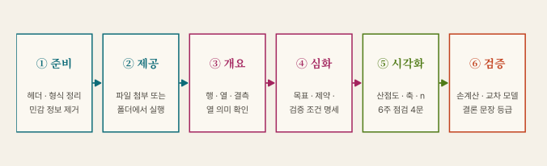
| ③ 개요 요청 | > 파일 내용 추측 금지. 코드로 행·열 수, 열 이름, 자료형, 결측 수만 출력해줘. |
|---|---|
| ⑥ 검증 요청 | > 방금 수치를 계산한 코드와 중간 집계표를 보여줘. 사용한 행 수도 표기해줘. |
| 결과 | 다음 행동 |
|---|---|
| 수치·결론 일치 | 핵심 수치 1개 엑셀·코드로 직접 재계산 후 채택 |
| 수치 일치 · 해석 상이 | 문장 등급 확인 · 주장 범위 축소 |
| 수치 불일치 | 코드 비교 → 결측·필터 처리 차이 추적 |
| 근거 코드 없음 | 결과 폐기 · 코드 요구 후 직접 재실행 |
병원 2차 소견 : 의사 2명의 의견 일치도 참고 정보 · 최종 확인은 검사 결과 → 데이터 분석의 검사 결과 = 코드와 원자료
| 구분 | 자료 예 | 처리 |
|---|---|---|
| 가능 | 공공데이터 · 수업용 합성 데이터 | 출처·이용 조건 표기 |
| 조건부 | 수업용 설문 · 학과 자료 | 비식별화 · 동의 · 교수자 지침 확인 · 필요 시 로컬 모델 |
| 금지 | 타인 개인정보 · 저작권자 허가 없는 자료 · 연구용 설문·인터뷰 · 미승인 연구 자료 | 외부 AI 입력 금지 |
도구명·모델 · 사용 목적 · 활용 범위 · 검증 방법 · 팀 기여도 · 고의 누락은 부정행위 가능
예 : OpenCode + 모델명 · 상관 분석 코드 작성 · 코드 생성 범위 · 손계산과 소수 둘째 자리 대조
코드는 AI 담당 · 질문과 검증은 사람 담당
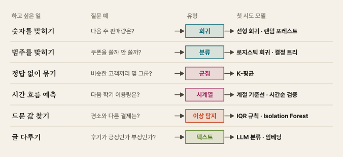
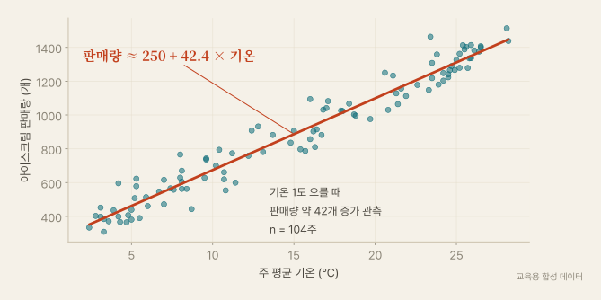
자 대고 선 긋기 : 점들 사이를 가장 잘 지나는 직선 1개
> temp_c로 ice_cream_sales 예측 선형 회귀. 앞 78주 학습, 뒤 26주 검증, MAE를 평균 기준선과 비교해줘.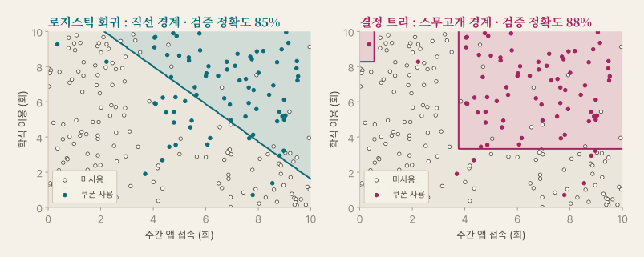
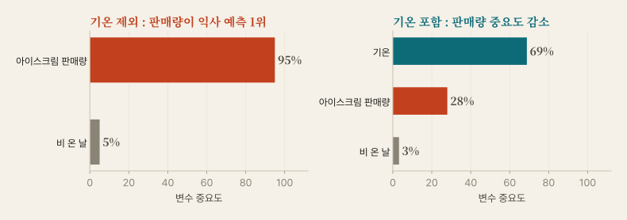
트리 수백 그루의 평균 (범주 예측은 다수결) : 혼자보다 안정적 · 중요도 = 분기에 많이 쓴 정도 · 비슷한 변수끼리 점수 분배 → 원인의 크기 아님
자리 바꾸기 : 조장 3명을 세우고 가까운 조장 옆에 앉기 → 조의 중앙으로 조장 이동 → 반복
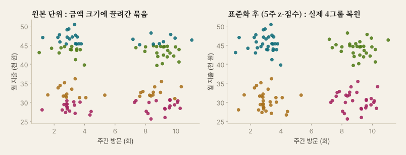
> 표준화 전후 결과를 모두 보여주고 그룹별 평균표를 작성해줘.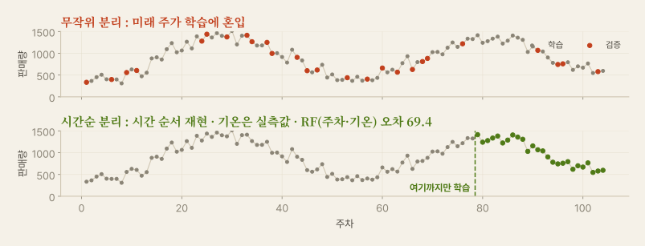
평소와 다른 값 찾기 · 결제 오류 · 센서 고장
먼저 5주 IQR·도메인 규칙 → 필요 시 Isolation Forest
결과 = 점검 후보 · 자동 삭제 금지
> 이상 후보 행과 이유를 목록으로 제시해줘. 원본 삭제 금지.
LLM 분류 : 긍정·부정·주제 라벨링
임베딩 : 뜻이 비슷한 글끼리 묶기
사람이 먼저 30건 라벨링 → AI와 일치율 확인
> 라벨 정의를 먼저 제시. 애매한 글은 «미정»으로 분류해줘.
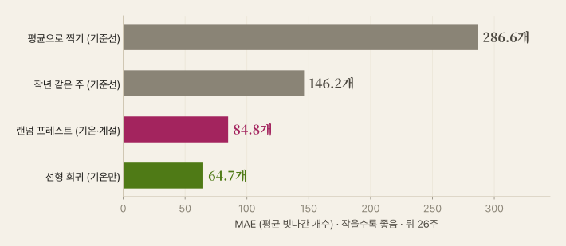
| 기준선 | 학습/검증 분리 | 지표 | 해석 |
|---|---|---|---|
| 평균·작년 값과 비교 | 검증 자료 봉인 · 시계열은 시간순 | MAE · 정확도 · 재현율 | 단순 모델부터 · 주장 범위 기록 |
import pandas as pd
from sklearn.linear_model import LinearRegression
from sklearn.metrics import mean_absolute_error as mae
df = pd.read_csv("ice_cream.csv")
train, valid = df[df.week <= 78], df[df.week > 78] # 시간순 분리
base = [train.ice_cream_sales.mean()] * len(valid) # 기준선 : 평균
model = LinearRegression().fit(train[["temp_c"]], train.ice_cream_sales)
pred = model.predict(valid[["temp_c"]])
print(round(mae(valid.ice_cream_sales, base), 1), # 286.6
round(mae(valid.ice_cream_sales, pred), 1)) # 64.7
상관 · 예측 · 인과의 경계 · AI 함정 #7
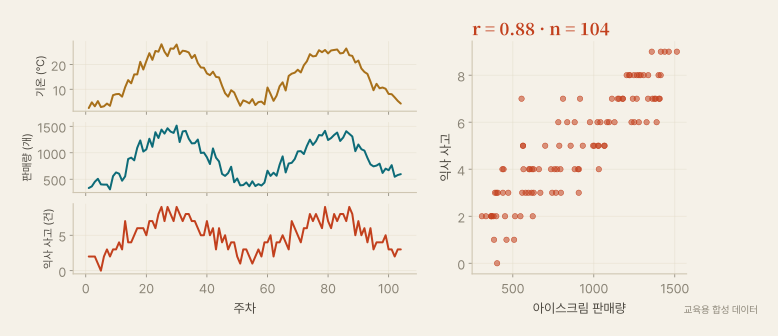
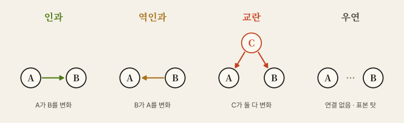
| 인과 | 복습 시간 → 성적 | 역인과 | 병원 방문 많음 ← 원래 아픔 |
|---|---|---|---|
| 교란 | 기온 → 아이스크림 · 물놀이 사고 | 우연 | 변수를 많이 뒤지면 일부 우연히 일치 |
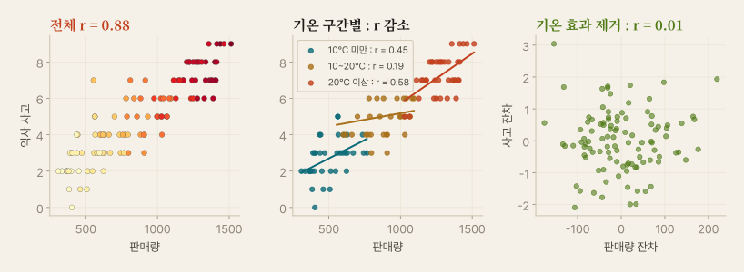
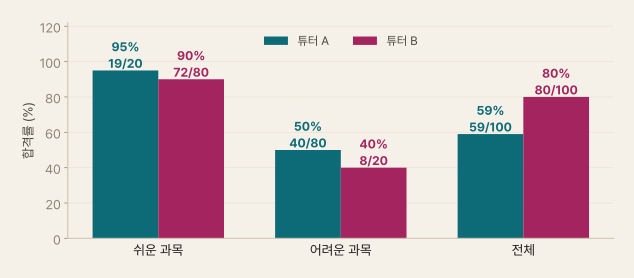
과목별 합격률 : A가 둘 다 우세
전체 합격률 : B가 우세
AI 요약이 전체 평균만 내면 결론 반전 위험
| 예측 질문 | 인과 질문 | |
|---|---|---|
| 문장 | 판매량을 보면 사고를 맞힐 수 있는가? | 판매를 금지하면 사고가 줄어드는가? |
| 이 데이터 | 가능 · 평균 찍기 1.9건 → 판매량 모델 0.8건 | 불가 · 사고는 기온으로 생성 |
| 필요 근거 | 검증 데이터 오차 | 무작위 실험 또는 그에 준하는 설계 (자연실험 등) |
| 쓰임 | 인력 배치 · 재고 준비 | 정책 결정 · 제품 변경 |
예측은 «무엇이 일어날까» · 인과는 «바꾸면 어떻게 될까»
| 등급 | 형식 | 필요 근거 | 이 데이터 |
|---|---|---|---|
| 기술 | «A와 B가 함께 움직임» | 상관계수 · 산점도 | 가능 (r = 0.88) |
| 추정 | «C가 둘을 설명할 가능성» | 교란 후보 검토 · 층화 | 가능 (기온) |
| 인과 | «A가 B를 변화시킴» | 무작위 실험 또는 그에 준하는 설계 | 불가 |
«해석해줘» 한마디가 만드는 «증가시킨다»
더 좋은 모델로 교체 ≠ 해결 · 요청과 검증 절차로 해결
LLM 2개 비교 → 층화 → 분석 모델과 기준선 대조
[목표]
ice_cream.csv로 판매량·사고의 관계 확인 · 판매량 예측 모델 2개 비교
[제약]
- 결론 문장에 인과 동사 금지 («영향», «때문», «효과», «증가시킨다»)
- 원본 수정 금지 · 앞 78주 학습 · 뒤 26주 검증
- 계산은 코드 실행으로만 · 말로 쓴 수치 금지
[검증 조건]
- r · n · 산점도 제시 · 기온 3구간별 r · 기온 직선 잔차끼리의 r 표기
- 교란 후보 3개와 확인 방법 표
- 평균 기준선 · 작년 같은 주 · 선형 회귀 · 랜덤 포레스트의 MAE 비교표
- 사용한 앱 · 모델 이름 기록
- 마지막 줄 : 이 자료로 주장할 수 없는 것 한 줄
[비목표]
- 판매 정책 제안, 그래프 꾸미기, 하이퍼파라미터 튜닝
| # | 활동 | 개념 |
|---|---|---|
| 1 | «상관 해석해줘»를 LLM 2개에 입력 → 인과 표현 표시 | 함정 #7 · 모델 비교 |
| 2 | 명세로 재요청 · 코드 실행 근거 확인 | 계산 영수증 |
| 3 | temp_c 구간으로 층화 · r 재계산 | 층화 |
| 4 | 기준선 · 선형 회귀 · 랜덤 포레스트 MAE 비교 | 기준선 · 과적합 |
| 5 | 확장 : 결론 문장 3등급 판정 · 심슨 사례 탐색 | 주장 범위 |
| 상관 | r | n |
|---|---|---|
| 판매량 × 사고 (전체) | 0.88 | 104 |
| 10℃ 미만 | 0.45 | 36 |
| 10~20℃ | 0.19 | 31 |
| 20℃ 이상 | 0.58 | 37 |
| 기온 설명분 제거 후 (잔차) | 0.01 | 104 |
| 판매량 예측 | MAE |
|---|---|
| 평균 기준선 | 286.6 |
| 작년 같은 주 | 146.2 |
| 랜덤 포레스트 ※ | 84.8 |
| 선형 회귀 (기온) | 64.7 |
| 상황 | 선택 | 필수 확인 |
|---|---|---|
| 표 요약·차트 초안 | LLM 상위·균형 + 코드 실행 | 코드 · 행 수 · 축 |
| 후기·설문 대량 분류 | LLM 빠른·경량 | 사람 라벨 30건과 일치율 |
| 숫자 예측 | 선형 회귀 → 필요 시 포레스트 | 기준선 · 검증 오차 (MAE = 평균 빗나간 개수) |
| 범주 예측 | 로지스틱 → 결정 트리 | 재현율 · 불균형 |
| 고객·문항 묶기 | 표준화 + K-평균 | 그룹별 평균표 · 시드 |
| 원인 확인 | 모델 교체 대신 실험 설계 | 10주 무작위 배정 |
| 항목 | 작성 기준 |
|---|---|
| 사례 | 보도·광고의 상관 근거 1건 · 출처 링크 |
| 주장 판정 | 원문 문장의 3등급 판정 |
| 대안 설명 | 역인과·교란·우연 중 후보 3개 |
| AI 비교 | LLM 2개의 해석 차이 · 앱·모델 이름 |
AI가 제시한 기사·논문의 실재 확인 · 없는 출처 사용 금지 (함정 #1)
AI 사용 기록 : 도구명·목적·범위 표기
| 개념 | 핵심 |
|---|---|
| 두 종류의 AI | LLM = 말·코드 생성 · 분석 모델 = 숫자에서 규칙 학습 · LLM이 분석 모델 코드 작성 |
| 모델·앱·위치 | 모델 이름은 수개월 단위 변경 · 등급으로 기억 · 앱과 모델 함께 기록 |
| 계산 영수증 | 말로 쓴 수치 금지 · 코드 · 출력 · 행 수 요구 · 핵심 수치 직접 재계산 |
| 데이터 입력 규칙 | 개인정보·허가 없는 자료 금지 · AI 사용 기록 · 민감 자료는 비식별 또는 로컬 |
| 분석 모델 | 회귀 · 분류 · 군집 · 시계열 · 이상 탐지 · 텍스트 → 질문 유형이 먼저 |
| 검증 | 기준선 비교 · 학습/검증 분리 · 시계열은 시간순 · 단순 모델 먼저 |
| 상관의 네 설명 | 인과 · 역인과 · 교란 · 우연 · 층화 · 기온 설명분 제거 r 0.88 → 0.01 |
| 예측 vs 인과 | 잘 맞힘 ≠ 바꾸면 변함 · 변수 중요도 ≠ 원인 |
| AI 함정 #7 | 인과 문장 자동 생성 → 동사 제한 · 교란 후보 3개 · 문장 3등급 |
측정 못 한 교란까지 나누는 방법 · 무작위 배정
A/B 테스트 설계